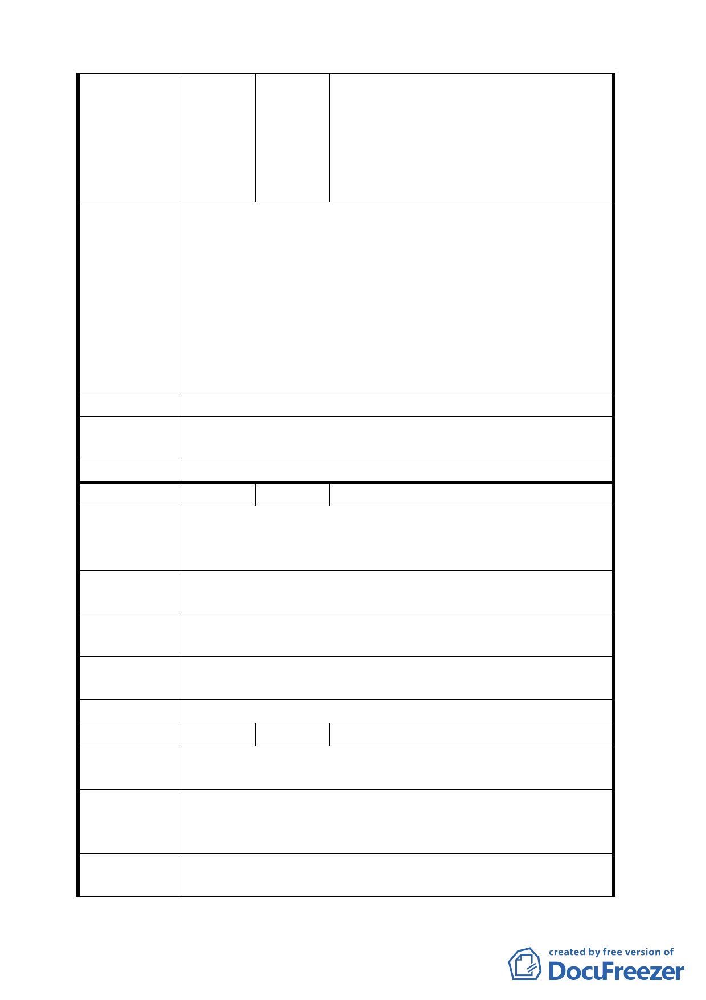

陳美蓉、黃柏鈞、柯秀琴、張瑞玲、
黃證源、葉金娥、張姿玲、高永華、
賴雅慧、楊祝華、余思慎、黃萬才、
呂清福、莊中任、林采萱、張哲綸、
李國彰、戴金生、黃旭志、賴森榮等
24 人
這個案子之前就已經送審送到一半，依我了解，現在
要依計畫書規定的時間根本不可能，九月開工也很趕，因
為現在都市更新處那邊根本就還沒審完，再加上這個案子
還要走都更，之前本來建商就有這個顧慮，所以不想申請
陳 情 理 由 「臺北好好看」，是我們地主去打聽都更案有放寬期限，
才一直要求他們去申請的，現在大家錢都投下去了，突然
才又有當初沒規定的 99 年 3 月前取得建築執照限制，我
們也是遵守當初規定去申請，若不過，本案的地上物更難
解決，市容無法改善，地主也蒙受損失，根本就是雙輸。
建議辦法 －
專案小組審
查意見
有關開發期程及開工日期之規定，請依市府統一規定修改。
委 員會決 議 依專案小組審查意見
編號
陳情理由
2 陳情人 吳正憲
本案配合「臺北好好看」開發計畫，都市審議有 99 年
3 月取得建照、99 年 9 月開工之規定，現在審查進度 3 月
取得建照有困難。
建議辦法
放寬限定 99 年 3 月一定要取得建照之規定，改為 99
年 9 月開工即可。
擬建議處理
意見
請發展局說明
專案小組審
查意見
有關開發期程及開工日期之規定，請依市府統一規定修改
委 員會決 議 依專案小組審查意見
編
號3
陳情人 莊中任
陳情理由
1.
2.
在本里停車難覓，希望能通過獎勵車位，保障大家方便。
為臺北好好看計畫速度能加快一些！
1. 希望能分出獎勵及法定車的獨立車道，請予設置，謝謝。
建 議 辦 法 2. 臺北好好看如此好的計畫，政府相關單位能加快完成審
查速度，謝謝。
擬建議處理
意見
請發展局說明
- 26 -